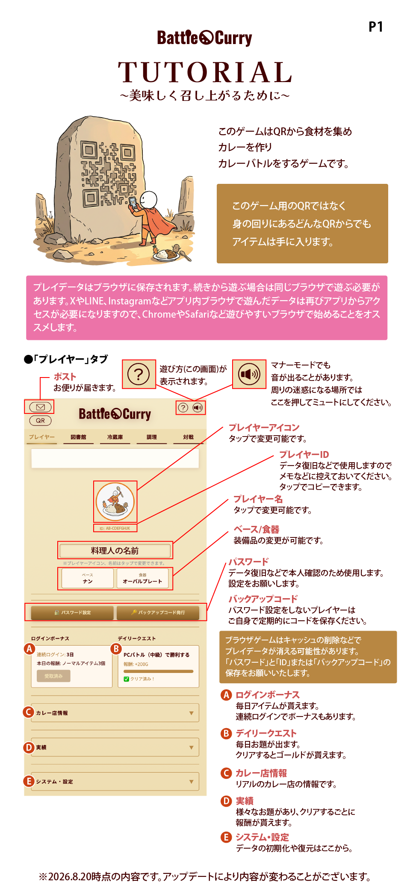

⚔️ MATCH MATCHING...
CHALLENGER
料理人
❓
VS
OPPONENT
対戦相手
🍛
相手カレー名
🍛 ランチタイムボーナス発生中 QR入手アイテム2倍 🍛

名無しの料理人 [Lv.1(EXP:0/100)]
|
資金: 0 G
|
パック券: 0 枚
|
スパイシーコイン: 0 枚

ID: ----------
※プレイヤーアイコン、名前はタップで変更できます。
ログインボーナス
デイリークエスト
特別ボーナス
実績
▼
システム・設定
▼
バトル速度
音量オンオフ
パスワード設定
©2026 Battle Curry All Rights Reserved.
QRコードは株式会社デンソーウェーブの登録商標です
QRコードは株式会社デンソーウェーブの登録商標です
1 / 5

QR BINGO
QR BINGO
QRスキャンでビンゴを目指そう！
🎉 1ビンゴにつき 100G
10ビンゴでスペシャルボーナス：スパイシーコイン1枚
タッグ戦マッチング
対戦相手
自分の出撃カレー
タッグを組む宅配カレー
QRを枠内に映してください
ピントが合わない時は画面をタップしてください
🎉 食材ゲット！
✨ キーワードボーナス発生！入手数3個！ ✨
空腹は最高のスパイスカレー
兵庫県西宮市
グルテンフリーで「美味しいが健康に」
阪急夙川駅から東へ約10分
阪急電車高架下≪阪急夙川サンらいふ≫
阪急夙川駅から東へ約10分
阪急電車高架下≪阪急夙川サンらいふ≫
SNSのフォローよろしくお願いします！
🥩
牛肉
⚠️ QRスキャンに関するご注意
ルールとマナーを守って楽しくお遊びください。・歩きスマホや、公共の場などで交通の邪魔になるスキャンはやめましょう。
・お店のレジにある「QR決済コード」へのスキャンは、店員さんの誤解を招くためご遠慮ください。
・購入前の商品のQRスキャンは、特典の不当な取得に当たる可能性もあります。必ず商品を購入した後にスキャンをお楽しみください。
©2026 Battle Curry All Rights Reserved.
QRコードは株式会社デンソーウェーブの登録商標です
QRコードは株式会社デンソーウェーブの登録商標です
🍛 ストックカレー
📦 所持食材（具材）
🌿 所持スパイス
©2026 Battle Curry All Rights Reserved.
QRコードは株式会社デンソーウェーブの登録商標です
QRコードは株式会社デンソーウェーブの登録商標です
✨ 会心の出来！！！ ✨
☠️ 危険！怪しい毒気が立ち上っている…！ ☠️
🌟 眩い輝き！最高級金箔仕立て！ 🌟
🍅🧀 マルゲリータの奇跡！全ステータス上昇！ 🧀🍅
🐷🐷🐷 3匹のトントントン！ブヒィ！ 🐷🐷🐷
🌊 海の幸が集結！海鮮スペシャルカレー！ 🌊
🦑🍄 幻惑の霧が漂う…敵の命中率が下がる！ 🍄🦑
🧀 ネバネバが敵を封じる！必ず先攻を取れる！ 🧀
🌱 種の力が炸裂！連続発射カレー爆誕！ 🌱
🍛 暴れ放題！わんぱくカレー誕生！ 🍛
☀️ 太陽の恵み！ラタトゥイユの結界！ ☀️
🏏 カキーン！ホームランの予感！ 🏏
🍎☠️ 甘い香りに毒が潜む…！毒りんごの誘惑！ ☠️🍎
🥚 ふわとろバリアが優しく包み込む！ 🥚
🟢🌶️ 激辛エスニックの嵐！ヒリヒリ注意！ 🌶️🟢
👑 世界三大珍味が織りなす至高の一皿ざます！ 👑
未調理 of カレー
HP: 0
ATK: 0
DEF: 0
SPD: 0
食材を選ぶ（3つまで）
スパイスを選ぶ（任意・1つまで）
完成時ステータス（合計値）
HP: 0
ATK: 0
DEF: 0
SPD: 0
発見したレシピ履歴
履歴がありません。
©2026 Battle Curry All Rights Reserved.
QRコードは株式会社デンソーウェーブの登録商標です
QRコードは株式会社デンソーウェーブの登録商標です

新しい対戦ルームを作る
対戦相手の募集一覧
部屋を読み込み中...
対戦相手を待っています...
0
🧬
対戦相手
HP: --/--
🍛
相手のカレー名
プレイヤー名
🍛
マイカレー名
HP: 100/100
再生速度:
VICTORY!
0
大爆発
敵1
HP: --/--
🍛
カレー名
敵2
HP: --/--
🍛
カレー名
プレイヤー名
カレー名
HP: --/--
宅配元プレイヤー名
カレー名
HP: --/--
再生速度:
VICTORY!
©2026 Battle Curry All Rights Reserved.
QRコードは株式会社デンソーウェーブの登録商標です
QRコードは株式会社デンソーウェーブの登録商標です